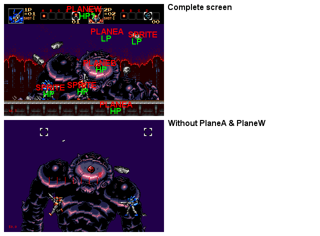

Pic 8 - And if I mix Pixel/Pixel H & 2Tiles/2Tiles V scrolling?
Damned, Contra is one of the most impressive (technicaly point of view) genny game. The whole boss is a plane !
And using a mix of Line/Line H & 2Tiles/2Tiles V scroll, it displays impressive *rotations* on the boss.
You can notice that the BG is PlaneA in LP & the FG is PlaneA in HP. The PlaneB is in HP (the boss).
